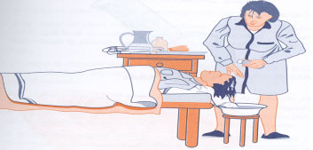

| 4.3.3 Limpieza del cabello |
- Protocolo de actuación:
- Colocar al usuario con la cabeza sobre la orilla de la cama,
sin almohada, recostada sobre el hule, que se recoge alrededor de
su cuello, sujetándolo con una toalla enrollada a modo de
collar. Se puede fijar con una pinza de Kocher.
La parte distal del hule se introduce en el cubo o palangana, quedando
un canal o embudo que facilita la recogida del agua.
Si el usuario lo desea, se le colocará algodón en
los oídos.
- Mojar el pelo y, después de aplicar una pequeña
cantidad de champú, dar un masaje en el cuero cabelludo con
las yemas de los dedos, frotando con el jabón toda su superficie.
- Enjuagar y repetir la operación.
- Secar con la toalla y retirar el equipo.
- Verificar que no queda humedad después de peinar y secar
con el secador eléctrico.
- Reubicar al usuario, comprobando que no se ha humedecido la ropa.
El procedimiento termina con la recogida del material, el lavado
de manos y el comentario de las circunstancias observadas a la enfermera
responsable para su registro.
|
| |
 |
|
|